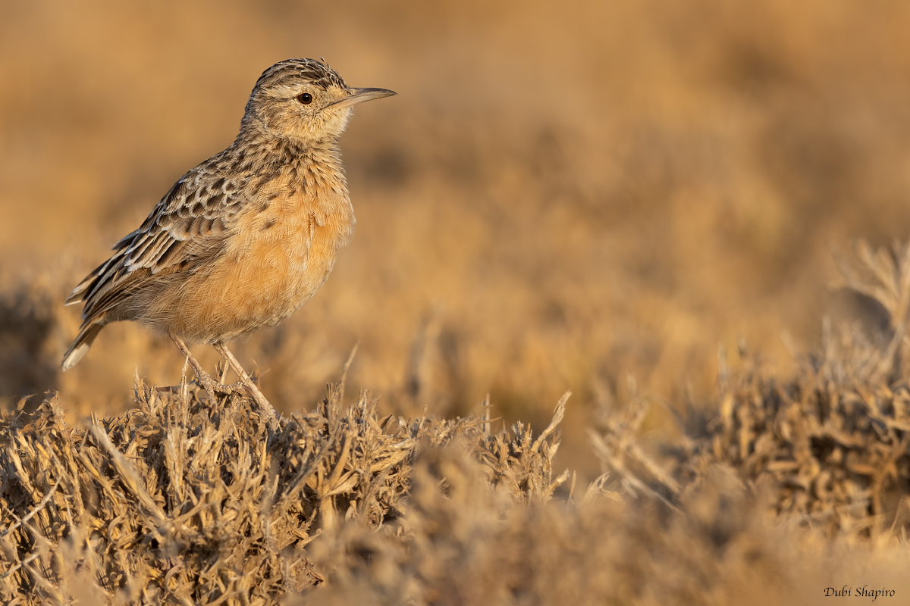
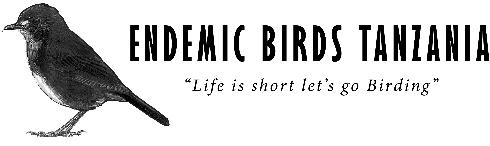
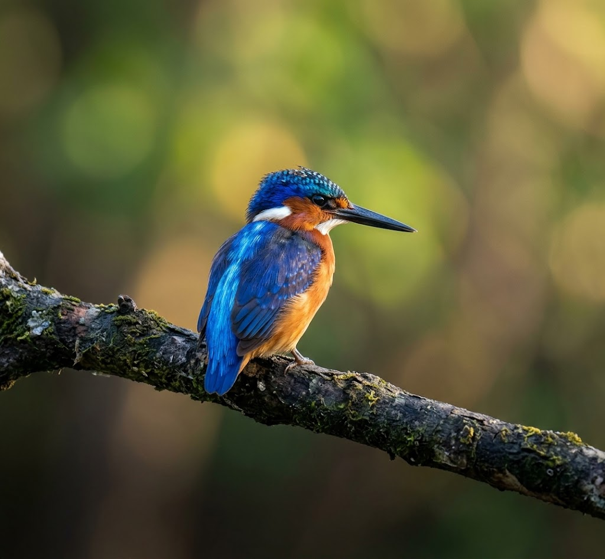
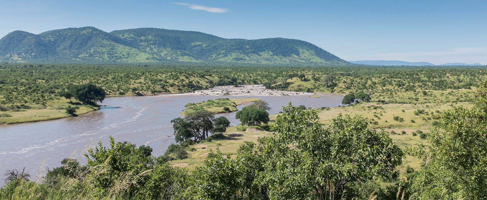
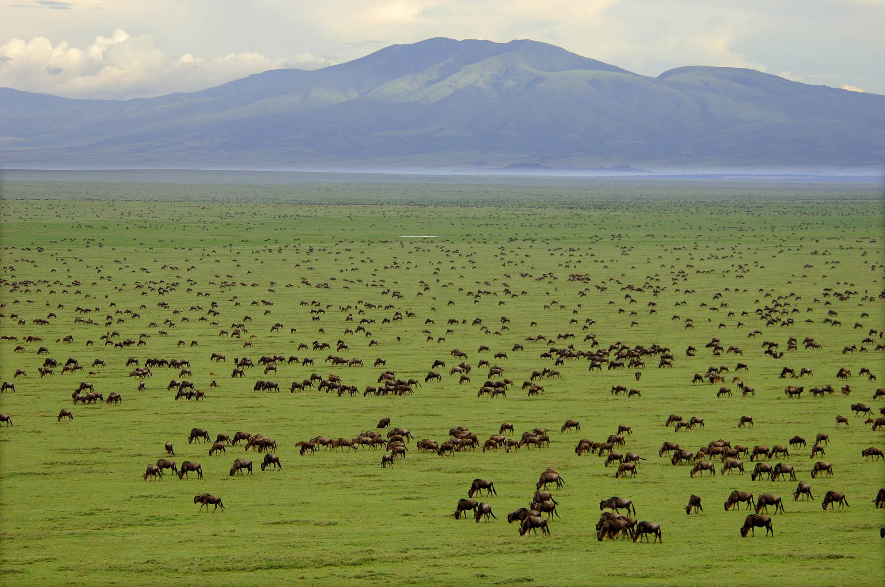
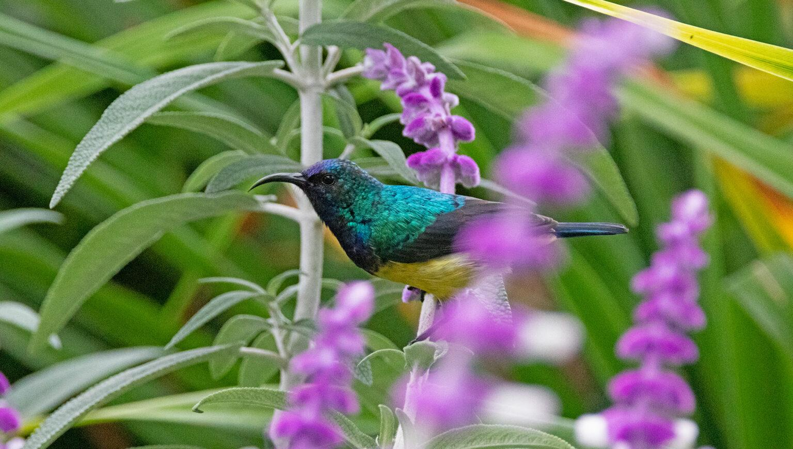

The endemic collectionTanzania’s remarkable endemics
A journey shaped around the birds that make Tanzania unlike anywhere else.

ENDEMIC BIRDST A N Z A N I ARooted in Tanzania. Led by curiosity.
Discover Tanzania through its remarkable birds. Thoughtfully paced journeys, local field knowledge, and time to notice the extraordinary.

A place to begin
Forest trails, open plains, a flash of colour.
Find the journey that speaks to you.

The endemic collectionA journey shaped around the birds that make Tanzania unlike anywhere else.

The quieter wildRoom to breathe, wide horizons, and a different rhythm in Ruaha and Mikumi.

Made around youBring your wish list. Explore a route that balances birds, wildlife and your pace.

THE BEAUTY IS IN THE DETAILS.A more personal perspective
To the call you almost missed. To the trail worth taking. To what makes a journey meaningful to you.
From our base in Iringa, we bring a Tanzanian perspective to the places we explore. Tell us what you hope to see, and how you like to travel.
Let’s start a conversationBefore you set out
Share your target birds, favourite habitats or photography interests. A route should begin with what matters to you.
Early starts and long forest walks, or a gentler mix of birding and wildlife? Tell us your preferred pace and walking comfort.
Accommodation is part of the conversation. Discuss comfort, location and access to birding sites before deciding on your itinerary.
Your next chapter
A favourite bird. A place you’ve imagined.
That is all it takes to start.